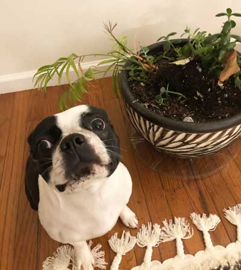

Behavior
Boston is a gentle breed that typically has a strong, happy-go-lucky, and friendly personality with a merry sense of humour. Bostons are generally eager to please their owner and can be easily trained. They can be very protective of their owners, which may result in aggressive and territorial behavior toward other pets and strangers. The breed requires only a minimal amount of grooming.
While originally bred for fighting as well as hunting rats in garment factories, they were later down bred for companionship. They are not considered terriers by the American Kennel Club, however, but are part of the non-sporting group.
Both females and males are generally quiet and bark only when necessary, though early training in this regard is essential. Their usually sensible attitude towards barking makes them excellent choices for apartment dwellers. They enjoy being around people, get along well with children, the elderly, other canines, and non-canine pets, if properly socialized.
